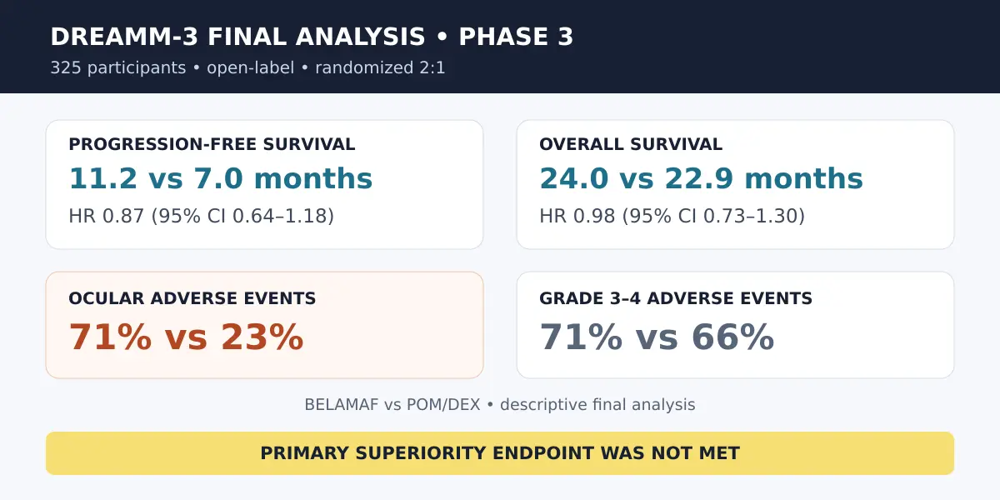

Fotoğraf ve kaynak · Veri: Dimopoulos ve arkadaşları, Blood Cancer Journal; özgün tasarım: Dr. Omid Kheirkhah web sitesiDREAMM-3 final analizi: Belantamab mafodotinin üstünlüğü kanıtlanmadı; göz yan etkileri daha sıktı
DREAMM-3 faz 3 çalışmasının final analizinde progresyonsuz sağkalım belantamab mafodotinle 11,2 ay, pomalidomid-deksametazonla 7 ay bulundu; ancak tehlike oranının güven aralığı 1'i içerdi ve final analiz için önceden belirlenmiş resmi hipotez testi yoktu. Birincil analiz de üstünlük göstermemişti; göz yan etkileri yüzde 71'e karşı yüzde 23 bildirildi.
Nükseden veya tedaviye dirençli multipl miyelomlu 325 hastada çok merkezli, açık etiketli, randomize faz 3 çalışma; doğrudan karşılaştırmalı kanıt, fakat birincil sonuç negatif ve final analiz yalnızca betimleyici
Yazıyı okuyun 4 dakika okuma